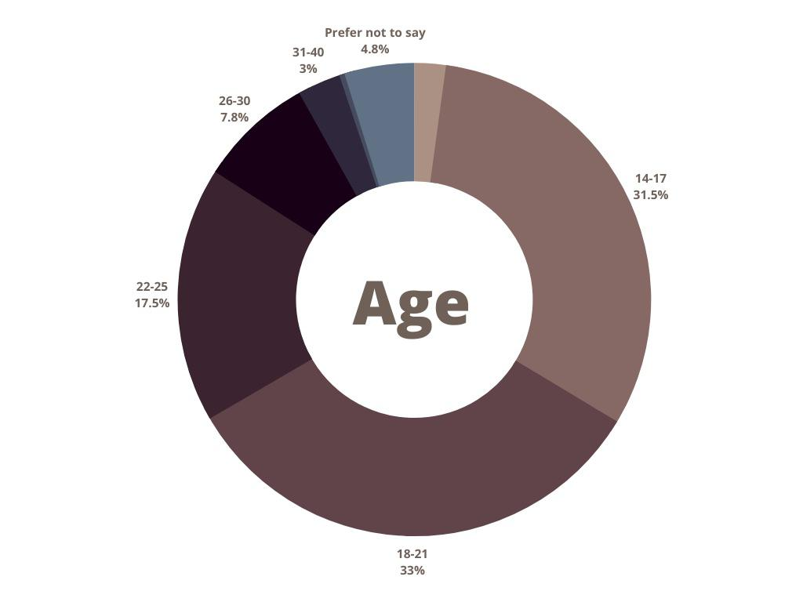

Genshin Impact Research
Genshin Impact, an RPG (role-playing game) that has significantly influenced the gaming industry, continues to captivate players worldwide. Garnering numerous awards, it has become a catalyst for bringing diverse communities together. The game brings both joy and frustration among players, who invest not only considerable time but also substantial financial resources. The impact extends beyond individual players, affecting those in their social circles as well.
Primarily popular among teenagers, Genshin Impact has faced criticism from parents worldwide. One story features a Singaporean father with a $20,000 credit card debt incurred by his daughter's in-game purchases. Another extreme case is a player spending over $100,000 in the game for receiving in game content. The game's design encourages users to invest both time and money to accelerate upgrades, progression, and advancement. This dynamic can lead to addiction, with players finding it challenging to discern when to pause, as the thrill of advancing in the game fuels a relentless desire to continue. To read the first story, you can find it in our Home Page under the Latest News and Links.
Chart showing revenue made since game release in 2020.

Chart showing revenue per download by region.
Chart showing ages of users from a survey of 2000 players.